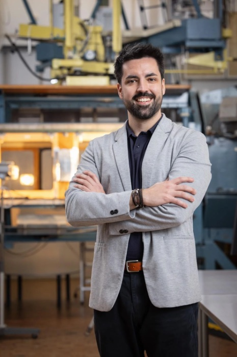
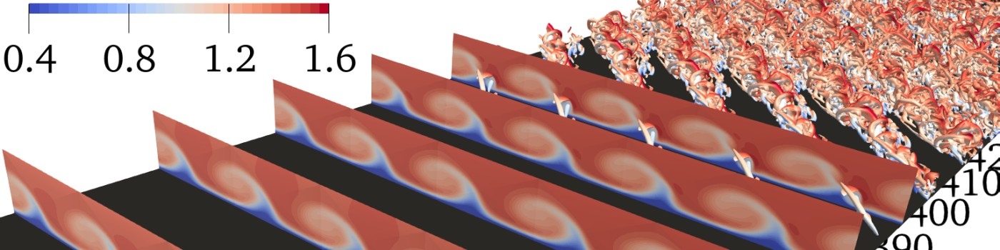

Researcher at the intersection of Flow Stability Theory and Computational Fluid Dynamics. Working to make aviation cleaner through laminar wing design.
Aviation will be green, or will not be.

Focus Areas
i.
Investigating the mechanisms by which laminar boundary layers break down to turbulence, with a focus on crossflow and Tollmien–Schlichting instabilities on swept wings.
ii.
Designing novel wing geometries and surface treatments that delay transition and reduce skin-friction drag — a key lever for sustainable aviation.
iii.
High-fidelity numerical simulations including Direct Numerical Simulation (DNS) and global stability analysis of the Navier–Stokes equations.

"Using Computational Fluid Dynamics towards greener aviation"
Background
I hold a PhD in Aerospace Engineering from the Delft University of Technology (TU Delft, The Netherlands), where I remain as a researcher in the Flow Control group (A2SC Lab).
My research sits at the frontier of aerodynamic efficiency — understanding how and where turbulence begins on a wing surface is essential to controlling it. Through careful stability analysis and large-scale simulations, I develop passive strategies that keep the boundary layer laminar for longer, reducing drag and fuel burn.
Beyond aerospace, my computational methods have been applied to blood-flow dynamics, illustrating the broad relevance of flow instability physics across engineering and medicine.
Selected Works
Journal of Fluid Mechanics · Casacuberta, J. et al.
AIAA Journal · Casacuberta, J. et al.
Physical Review Fluids · Casacuberta, J. et al.
Journal of Biomechanics · Casacuberta, J. et al.
Code & Data
Open-source code and datasets related to my research will be listed here. Links to GitHub repositories, Zenodo datasets, and supplementary materials for published work.
Whether you're interested in collaboration, have questions about my research, or want to discuss opportunities in sustainable aviation — I'm glad to hear from you.